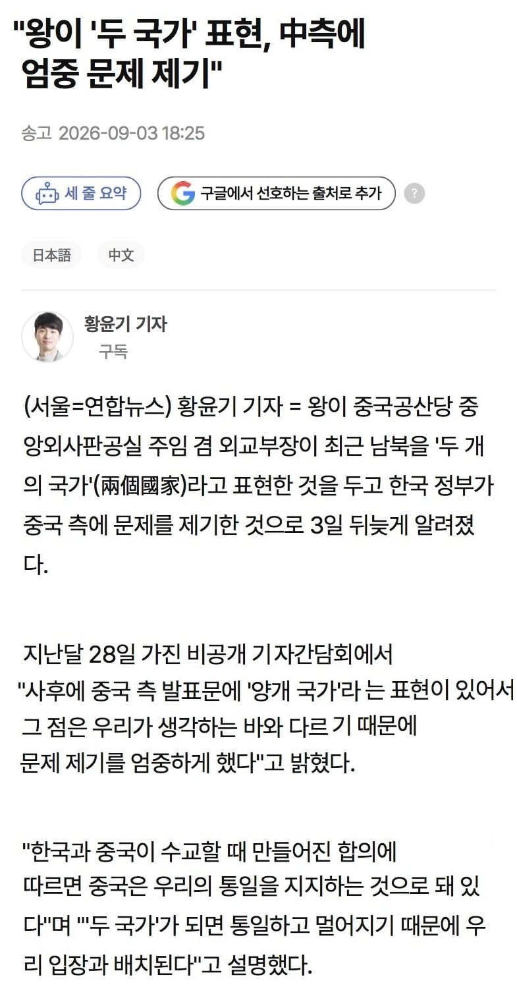

"하나의 한국" 으로 하드 카운터
ㅋㅋㅋㅋ

"하나의 한국" 으로 하드 카운터
ㅋㅋㅋㅋ
북한은 공식적으로 무단으로 이북지역을 점령한 반국가단체임
실제론 그렇지 않다는건 잘 알거고 명목상으로만 그런데 통일 문제에선 이게 꽤 중요한 명분이거든
아 감사합니다
북한으로 올림픽 요런데도 나와서 뭔 소린가했는데 이해가 쏙쏙 되네용
좋은 하루 보내세용
얼- 좀 치네?
태극권 ..
하나의 중국 원칙은 중국 스스로가 포기한 적 없고 하나의 한국은 이미 한국 정부가 오래전부터 스스로 포기한거라 업보빔 맞은거지 뭐
방구석개붕이가 포기했다고 하면 그런거겠죠 암~
대외적으로 한국과 수교할거면 북한과 단교하라는 원칙을 포기한게 팩트인데 모르는 빡통머가리들 천지삐까리네 이미 대외적으로 한국은 하나의 한국 원칙 포기한지 오래임.
포기해서 아직도 정부부처로 통일부가 있음?
1969년 국토통일원 -> 1990년 통일원 -> 1998 통일부
오래전부터? 포기? 업보빔? 뭐하나 맞는게 없네
정부 인정을 안 하는데 통일부가 있는게 더 이상하지않나? 무단점거집단이랑 통일한다는건가?
올해 들어서 짱꿰들 여럿 들어온 거 같네
한국엔 무려 북한 5도 미수복 지역 도지사 직책이 명목상으로 존재한다는걸 아니?
언제 포기했는데?
옳그떠 얘기하긴 싫으니까 623선언 보고와
할슈타인 원칙은 얘기하면서 남북한특수관계론은 얘기하지 않는 체리피킹. ㅂㅁ
애초에 한반도의 남북한 문제에서 우리의 대북 접근법은 동서독 문제의 서독 정책을 복붙 비스무리하게 하는데 이건 건너뛰고 체리피킹 + 빡대가리 운운 ㅈㄴ 불편하다 이거예요
그러면서 쫄보라 옳그떠로 회피하는 쫄보무빙까지 어느쪽 정훈교육인지 모르겠는데 작작 좀
현실은 한국 정부는 남북한 동시수교를 용인했고 특수관계 운운은 철저히 국내용이라는거. 중국은 대만 중국 동시수교 거부원칙을 고수했지. 남북한특수관계론 운운하기 전에 일관성 없는 한국 정부부터 비판하던가. 북한보고 탈되하라고 할 배짱도 없으면서 차라리 유엔 탈퇴한 중화민국이 더 일관적임
미러링
이건 좀 괜찮네
너네? 하나의 중국 하고싶어?
우리도 하나야 맞지?
ㅋㅋㅋㅋㅋㅋㅋㅋㅋㅋ
역시 안보는
착한 미러링 인정합니다
잘 몰라서 그러는데 하나의 중국이 뭔 소리에요??
본문에서는 북학과 한국을 따로 봐서 두개의 국가로 본다고하는걸 한국에선 그러면 통일이랑 멀어진다고 하나의 국가로 봐야한다고 말한거같은데
근데 북한이랑 우리나라랑 전쟁중이니 다른 나라라고 할만하지 않아요? 어캐 되는거지